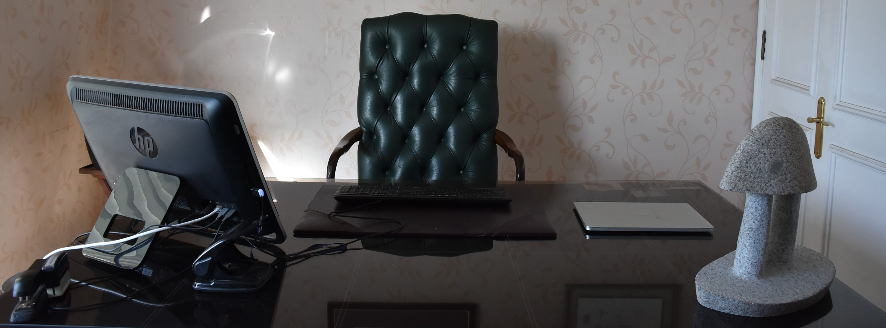

Áreas de Práctica
ARBITRAJE
José Antonio Abarca Moraga es Juez Árbitro nombrado por la Ilustrísima Corte de Apelaciones desde el año 2017, por lo que recibe causas de partición desde los Tribunales Civiles de Santiago.
Abarca Zañartu tramita además otros procedimientos arbitrales, destacando el procedimiento simplificado de división de herencia.
Ver más >CIVIL
- Juicios de partición
- Compra venta de inmuebles
- Estudios de título
- Cobranza
- Juicios de arrendamiento
- Procedimientos civiles varios
- Regularización de la pequeña propiedad raíz
FAMILIA
- Divorcios
- Tutela, Cuidado Personal y Visitas
- Pensión Alimenticia
AMBIENTAL
- Obtención de Permisos Ambientales
- Obtención de Permisos Sectoriales
- Demanda de Daño Ambiental
- Procedimientos Sancionatorios
- Mediación Ambiental
LABORAL
- Asesoría a empresas
- Demanda de Despido Injustificado
- Demanda de Cobro de Finiquito
- Demanda por Vulneración de Derechos
- Asesoría Ley Karin: Protocolos, Capacitaciones y Comisión de Investigación
CORPORATIVO
- Creación y modificación de sociedades
- Contratos
PENAL
- Tramitación de Querella
- Defensa temprana del imputado